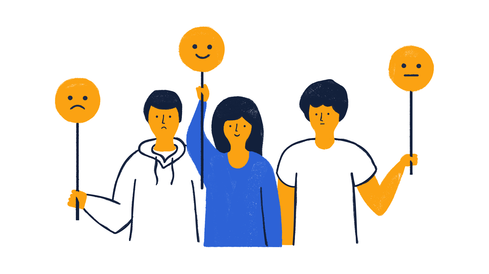

The Customer Experience Guide
About Project
Customer experience is the impression you leave with your customer, resulting in how they think of your brand, across every stage of the customer journey. Multiple touchpoint factor into the customer experience, and these touchpoint occur on a cross functional basis
Understand Your Target Customers Better
Focus efforts on your best customers and dive deep into what motivates them. Develop different marketing persona based on these customers while identifying the unique characteristics that drive them. It’s crucial you can consistently provide the kind of experience that delights these customers.
Communicate The Way Customers Want
We live in an omnichannel world. 73% of shoppers use multiple channels during their shopping journey. You must be able to communicate with them the way they want. Whether it’s through email, phone, text, chat, social media or in-person, you need to provide a consistent – and seamless – experience across platforms. One of the best ways to do this is to leverage automation software that connects your marketing efforts to your CRM.
Always On
you need to connect with customers the way they want, and must be available when they want to connect. This means 24/7. Your website is open 24/7, but you can enhance it by creating content that serves customers when you’re not around. This includes how-to guides, FAQs, and knowledge bases that can answer questions. Additionally, chatbots can be an effective to provide quick answers and resolutions.
Reward Loyalty
When you identify customers that are engaged and loyal, it’s important to reward them for their behavior. Reward them with exclusive offers, discounts, or private events. Additionally, reward long-term customers with exclusive access to new features, or include them in brainstorms for new features. They may appreciate having a say in how your business grows.
Monitoring Social Channels
Customers aren’t shy about complaining when they have a problem or an experience that’s less than optimal. Make sure you are monitoring social channels for signs of concern. Deal with them immediately and publicly to demonstrate others you have a commitment to customer experience.
Survey Customers
Regularly surveying your customers about their experiences is an important tool. You’ll uncover problems you didn’t know you had and have a way to measure improvements. Its crucial to track things like your companies:
NPS (Net Promoter Score)
CSAT (Customer Satisfaction Score)
CES (Customer Effort Score)